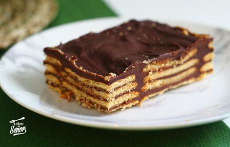

Receta de masa dulce para tartas - Recetas de Laylita
Ir a navegación principal Ir al contenido principal Ir a la barra lateral primaria Ir al pie de página Inicio English version Recetas con Videos Indice Recetas Ecuatorianas Sopas Ecuatorianas Platos Fuertes Ecuatorianos Desayunos Ecuatorianos Comida Callejera Ecuatoriana Ceviches Empanadas ¿Quién es Laylita? Sitios Recettes de Laylita Receitas da Laylita Travel Viajes
Nav Social Menu
Inicio » Todas las recetas » Por tipo » Pasteles y tartas » Receta de masa dulce para tartasReceta de masa dulce para tartas
Por Layla Pujol 4 comentarios
Esta es una receta muy fácil para preparar la masa dulce para tartas. No soy de las que siempre preparan postres, pero me encanta hacer tartas porque son fáciles de hacer y a la gente siempre les gustan. Las tartas también son versátiles y se pueden usar rellenos diferentes, para que no siempre sea el mismo postre. Usted le puede dar un toque personal a esta receta agregándole especias molidas como canela, jengibre, pimienta dulce o hierbas secas como menta o cedron.
Esta receta rinde dos tartas de 8-9 pulgadas o de 23-25 cm. Pienso que si se va a preparar una tarta mas vale hacer dos, le puede brindar la tarta adicional a su vecina (si le cae bien) o lo puede llevar al trabajo (sus compañeros de trabajo estarán felices). También puede usarlas para preparar dos tartas con rellenos diferentes y así impresionar a sus invitados. También se puede congelar la tarta adicional y usarla en otra ocasión. Y claro también se puede dividir la cantidad de los ingredientes por la mitad y solo preparar una tarta.
Receta de masa dulce para tartas
Receta fácil para preparar la masa para tartas dulces 4.75 de 836 votos Imprimir Pin Preguntas o comentarios Plato: Dulces, Postres Cocina: Europea, Francesa, Fusión, Norteamericana Keyword: Masa casera, Masas dulces, Pasteles, Tartas Tiempo de preparación: 15 minutos Tiempo de cocción: 45 minutos Tiempo en la refrigeradora: 30 minutos Tiempo total: 1 hora 30 minutos Rinde: 2 tartas de 8-9 pulgadas o de 23-25 cm cada unaIngredientes
3 tazas de harina ¼ de taza de azúcar 1 pizca de sal 8 onzas de mantequilla 2 huevos 2-4 cucharadas de agua fríaPreparación
Ponga la harina, el azúcar y la sal en un procesador de alimentos y mezcle bien. Añada los trozos de mantequilla, en pedazos, y mezcle bien. Agregue los huevos y el agua, empiece por 1 cucharada de agua y agrega el resto poco a poco. Mezcle hasta que se forme una masa gruesa o bolitas de masa. Retire la masa del procesador de alimentos y amáselo suavemente durante unos minutos. Forme 2 bolas con la masa (una para cada tarta), aplánelas en forma de un disco grueso, y déjelas enfriar en la refrigeradora durante 30 minutos. Espolvoree una hoja de papel encerado con un poco de harina y extienda la masa con un rodillo hasta obtener una lámina de masa delgada. La lamina de la masa debe ser un poco mas grande del molde de tarta de va usar, no importa si los bordes de la masa se extiendan más allá de los bordes de la hoja de papel encerado. Con cuidado voltee la hoja de papel encerado con la masa sobre un molde de tarta, previamente engrasado. Quite el papel encerado y presione suavemente con los dedos hasta que la masa este pegada al molde. Ruede el rodillo sobre los bordes del molde para eliminar cualquier exceso de masa. Si gusta puede dejar un poquito de masa extra para envolver alrededor de los bordes del molde, estoy ayuda a evitar que la masa se encoja a la hora de hornear. Pinche la masa de la tarta con un tenedor y deje reposar en la refrigeradora o nevera durante al menos 30 minutos o hasta que esté la hora de usarla. Si usted necesita que la masa de la tarta este semi-horneada, precaliente el horno a 375F a 400. Cubra la masa con papel aluminio o papel manteca y rellene con arroz o frijoles o pesas para hornear – esto evita que formen burbuja de aire en la masa. Hornee durante unos 20 minutos, hasta que los bordes empiecen a dorarse. Si los bordes de la tarta quedan demasiado dorados puede cubrir los bordes con papel de aluminio mientras se hornee la tarta con su respectivo relleno. El tiempo de cocción y la temperatura del horno para la tarta dependerá del relleno que utiliza y si la masa se hornea parcialmente antes de agregar el relleno. 
 
 
 
 
Haz clic para compartir en Facebook (Se abre en una ventana nueva) Haz clic para compartir en Pinterest (Se abre en una ventana nueva) Haz clic para compartir en Twitter (Se abre en una ventana nueva) Haz clic para compartir en WhatsApp (Se abre en una ventana nueva) Haz clic para enviar por correo electrónico a un amigo (Se abre en una ventana nueva)Relacionado
Archivado en: Básicas , Día de Acción de Gracias o Thanksgiving , Europa , Latino/Hispano , Navidad y Nochebuena , Norteamerica , Para fiestas , Pasteles y tartas , Postres , Vegetariana
Interacciones con los lectores
Comentarios
Andrea dice
marzo 14, 2021 en 9:55 pm
Buena la receta
ResponderElizabeth dice
octubre 21, 2020 en 7:41 pm
Muy buena receta, la hice y quedó genial. Gracias.
ResponderBrisa dice
abril 3, 2020 en 12:14 am
La harina tiene que ser com√∫n o leudante?
ResponderLayla Pujol dice
abril 5, 2020 en 11:29 am
Es harina de trigo com√∫n (todo uso) sin leudante
ResponderComentarios? Preguntas? Cancelar respuesta
Barra lateral primaria
Suscríbase
Bienvenido
 Mi nombre es Layla Pujol, también conocida como Laylita, y soy ecuatoriana, aunque actualmente vivo en Seattle, WA. Muchas de mis recetas son inspiradas por la comida ecuatoriana, por la cocina americana-mexicana de mi mama, quien creció en Nuevo México, y también por la cocina de mi abuelita en Texas. MásMi libro de cocina ¡Cómpralo ahora!
Recetas por categoría
Acompañantes (49) Aderezos (28) Andes (24) Año Nuevo (34) Bebidas (45) Bocaditos y snacks (51) Básicas (37) Caribe (20) Carne (39) Comida reconfortante (43) Condimentos (24) Cócteles y tragos (28) Desayuno (45) Día de Acción de Gracias o Thanksgiving (27) Día de los Enamorados (37) Ecuador (133) Empanadas (21) Ensaladas (33) Entradas y Aperitivos (74) Europa (67) Frutas (78) Fáciles (171) Latino/Hispano (267) Mariscos (33) Mexico y Centroamerica (66) Navidad y Nochebuena (41) Norteamerica (64) Para fiestas (147) Para niños (94) Pescado (22) Plato principal (78) Postres (64) Queso (23) Recetas con aguacate o palta (35) Recetas con Videos (33) Recetas para el Día de la Madre (51) Recetas para la Cuaresma (54) Salsas (41) Sin carne (90) Sudamerica (223) Todas las recetas (112) Tradiciones (39) Vegetariana (163) Venezuela (25) Verduras (34)Comida Ecuatoriana
Pan de yuca
El pan de yuca se conoce tambi√©n como pan de queso en Colombia o pao de queijo en Brasil, se prepara con almid√≥n o harina …Como preparar la masa para empanadas de horno
Receta f√°cil para preparar la masa para empanadas de horno. Esta receta de masa casera de empanadas incluye videos y fotos paso a paso.Humitas
Receta para preparar humitas ecuatorianas con choclo o maíz fresco (elote), queso, huevos, mantequilla, crema de leche, y azúcar.Footer
Síguenos!
@RecetasdeLaylita en Instagram
{Shakshuka} Huevos en una salsa de tomate, pimiento, cebolla ‚Äì mi versi√≥n tiene un toque latino y tambi√©n lleva chorizo, lo serv√≠ con aguacate, jalape√±os y quesito fresco Picadillo de chorizo y pl√°tano maduro {macho} ‚Äì lo serv√≠ con huevos fritos, queso fresco, aguacate, y aj√≠ o salsa picante. Garbanzos con chorizo y chimichurri + huevos fritos Sangr√≠a de mel√≥n üçâüçàüçâ Refresco de mango y lim√≥n ü•≠üçãü•≠ Limonada de fresa {Fresada} Inicio ¬øQui√©n es Laylita? In English En Fran√ßais Em Portugu√™s
© Laylita.com 2021. Todos los derechos reservados. Prohibida su reproducción sin autorización. Política de privacidad | Contacto
Cargando comentarios Comentario ×
